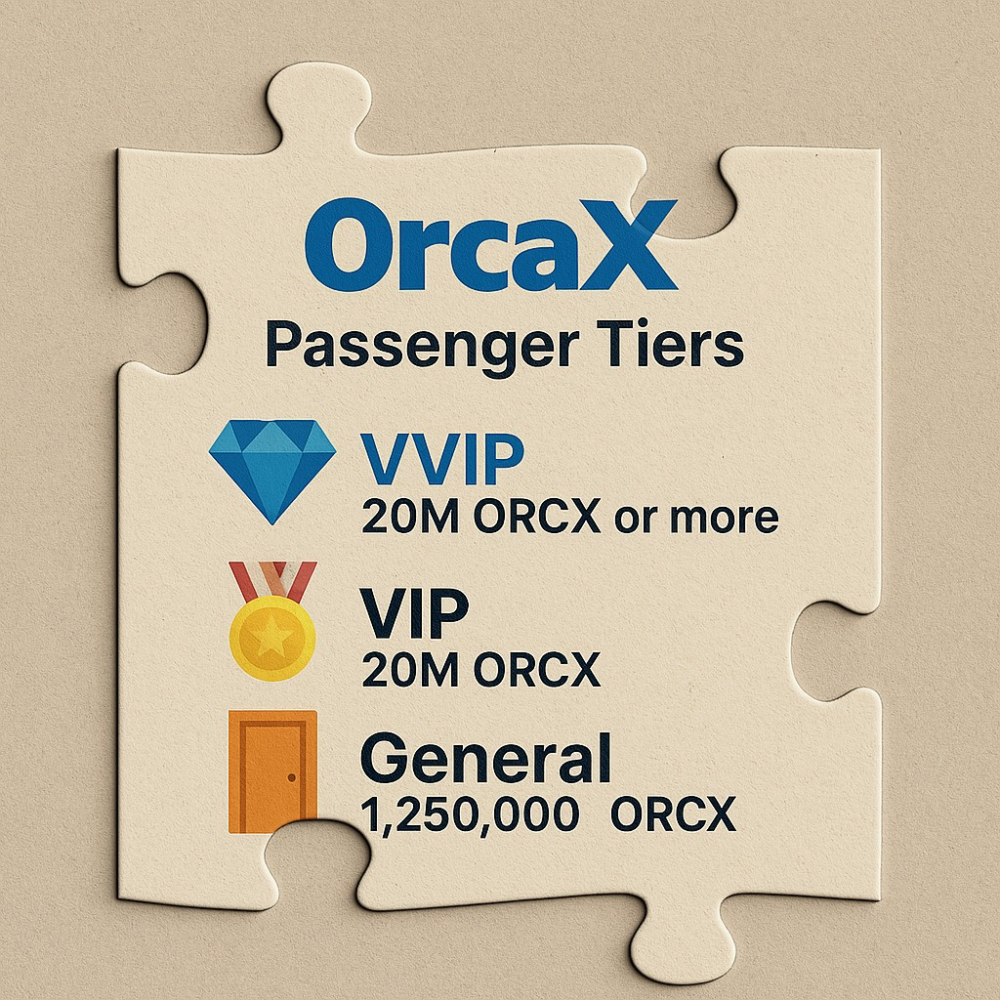

당신의 선택이 OrcaX를 항해시킨다.
바다에는 수많은 배가 떠다니지만,
진짜 항해는 한 명의 선장이 아닌, 함께하는 이들의 신념으로 움직입니다.
OrcaX는 누군가를 태우는 배가 아니라,
함께 노를 젓고 방향을 정하는 커뮤니티 중심의 함선입니다.
한 사람의 선택이 모이면 물살이 되고,
모두의 의지가 모이면 그것은 거대한 물결이 됩니다.
당신의 선택 하나가,
OrcaX의 항로를 조금 더 앞으로, 조금 더 멀리 나아가게 합니다.
우리는 누군가의 배에 탄 손님이 아닌,
함께 항해하는 항해자들입니다.
